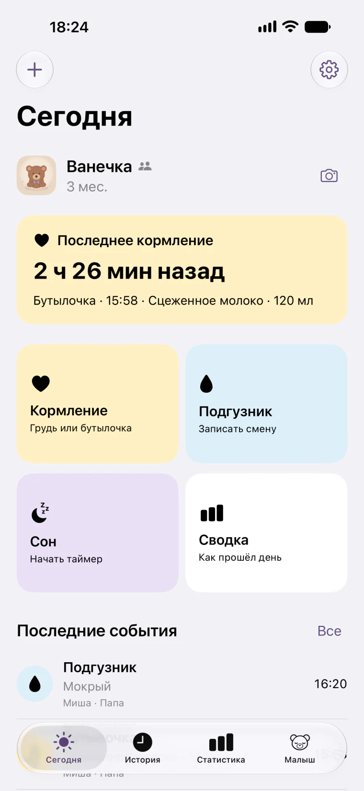
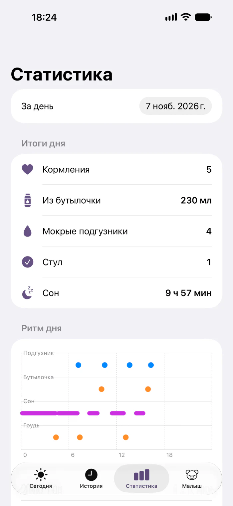

Дневник первых дней
Записывайте кормления, сон и подгузники. Смотрите, когда малыш ел в последний раз и сколько спал за день.
Посмотреть возможностиГотовится к выходу в App Store


Как прошёл день
Откройте историю, чтобы вспомнить время кормления, или посмотрите суточную сводку сна, кормлений и подгузников.
- Таймеры под рукой
- Засекайте сон и кормление грудью, переключайте сторону и смотрите ход таймера на экране блокировки iPhone.
- Как растёт малыш
- Записывайте вес, рост и окружность головы. Просматривайте свои измерения на графиках.
- Фотографии в дневнике
- Добавляйте снимки и возвращайтесь к ним в фотоальбоме ребёнка.

Один дневник на двоих
Пригласите близкого через iCloud, чтобы вы оба видели записи выбранного дневника. Синхронизацию можно включить в настройках. Личный дневник доступен и без неё.
Как пригласить близкогоНа iPhone и Apple Watch
На сопряжённых часах можно начать таймер или записать кормление и подгузник. Записи передаются в дневник на iPhone.
iOS 27.0 и новее · watchOS 26.0 и новее